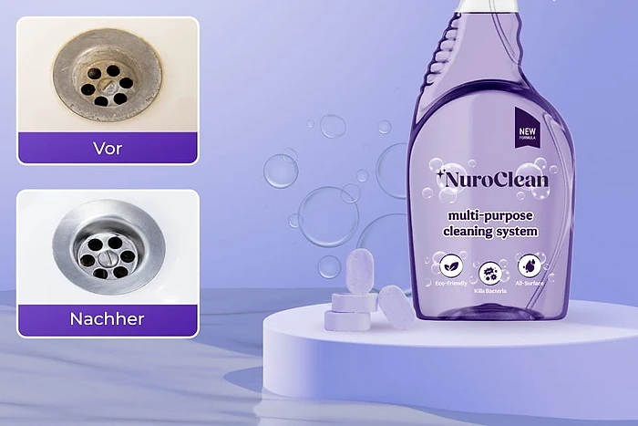
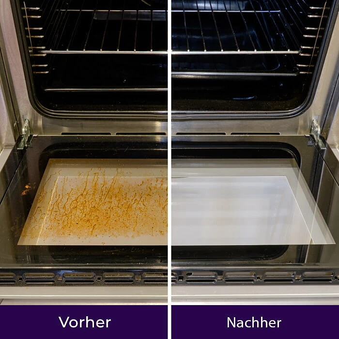

Was ist NuroClean und wie funktioniert es?
NuroClean ist ein Allzweckreiniger in Tablettenform. Geliefert werden eine wiederverwendbare Sprühflasche und konzentrierte Reinigungstabletten, aus denen man mit Leitungswasser selbst ein Reinigungsspray ansetzt. Auf der Flasche steht auf Englisch „multi-purpose cleaning system“, dazu die Symbole „Eco-Friendly“, „Kills Bacteria“ und „All-Surface“.
Das Prinzip beschreibt der Hersteller so: Eine Tablette löst sich in der mit Wasser gefüllten Flasche innerhalb weniger Minuten auf und ergibt eine Reinigungslösung, die laut Website mit „fortschrittlicher Tensidtechnologie“ arbeitet. Das Spray soll Fett, Schmutz, Seifenreste, Schimmel und Flecken bei Kontakt lösen, sodass man nur noch sprühen, kurz einwirken lassen und abwischen muss.
Als Einsatzbereiche nennt die Website Küche, Bad, Glas, Fliesen, Holz, Metall und Stoff, etwa Fett auf dem Herd, Kalk- und Seifenreste in der Dusche oder Weinflecken auf dem Teppich. Weil nur die Tabletten nachgekauft werden, soll weniger Plastikmüll entstehen als bei fertig gemischten Reinigern.
Bei mehreren Aussagen ist Vorsicht angebracht. Die Seite bezeichnet NuroClean als „ungiftig“, „allergenfrei“, „frei von Chemikalien“ und „sicher für Kinder und Haustiere“, nennt aber keine Inhaltsstoffe und verweist auf kein Sicherheitsdatenblatt. Jeder Reiniger besteht aus chemischen Stoffen; ohne Angaben lässt sich nicht beurteilen, wie mild das Produkt wirklich ist. Auch „entfernt zu 100 % alle Flecken“ ist eine Werbeaussage.
Einordnung: Reinigungstabletten zum Selbstanmischen sind ein bekanntes Konzept und können im Alltag praktisch sein, vor allem wegen der wiederverwendbaren Flasche. Für leichte bis mittlere Verschmutzungen eignen sie sich oft gut. Bei eingebranntem Backofenschmutz, starkem Kalk oder Schimmel in Fugen sind meist mehrere Durchgänge, längere Einwirkzeit oder Spezialmittel nötig. Die Ergebnisse können je nach Oberfläche und Verschmutzung deutlich schwanken. Wer das berücksichtigt, kann NuroClean als einfachen Alltagsreiniger für die regelmäßige Pflege im Haushalt einsetzen, ohne Wunder zu erwarten.
NuroClean Funktionen
Laut der offiziellen Website bietet NuroClean:
Konzentrierte Tabletten: lösen sich in Wasser auf und ergeben eine Reinigungslösung.
Wiederverwendbare Sprühflasche: nur die Tabletten werden nachgekauft.
Breiter Sprühnebel: eine spezielle Düse soll große Flächen gleichmäßig benetzen.
Mehrzweck: für Küche, Bad, Glas, Fliesen, Holz, Metall und Stoff.
Gegen Fett und Schimmel: soll auch hartnäckige Verschmutzungen lösen.
Frischer Duft: ohne stechenden chemischen Geruch.
Auf den Produktbildern sind eine lila Sprühflasche mit drei Tabletten, Vorher-nachher-Bilder eines Abflusses, einer Backofentür und einer Dusche sowie eine Bildtafel mit Küchengeräten, Glas, Holz und Schimmel zu sehen. Eine Vergleichstabelle stellt NuroClean „anderen Produkten“ gegenüber, ohne diese zu nennen.
Was fehlt: die Größe der Flasche, die Anzahl der Tabletten pro Packung, das Mischverhältnis, die Haltbarkeit der angesetzten Lösung und eine Liste der Inhaltsstoffe. Die deutsche Seite enthält außerdem auffällige Übersetzungsfehler, etwa niederländische Wörter wie „Kenmerken“, „Gifvrij“ oder „Alles-in-één“ und an einer Stelle den Namen „NanoClean-Technologie“. Auch welche Bakterien das Spray laut Aufdruck „Kills Bacteria“ abtöten soll und ob es dafür geprüft wurde, erklärt die Website nicht. Als Desinfektionsmittel sollte man es deshalb nicht einplanen.
NuroClean Anwendung
Die Website beschreibt drei Schritte. Füllen Sie die Sprühflasche bis zur Markierung mit Wasser und geben Sie eine Tablette hinzu. Sobald sich die Tablette vollständig aufgelöst hat, schütteln Sie die Flasche leicht und sprühen die Lösung auf die verschmutzte Oberfläche. Lassen Sie sie einige Augenblicke einwirken und wischen Sie dann mit einem Tuch oder Schwamm ab.
Laut den häufig gestellten Fragen braucht die Tablette meist nur wenige Minuten zum Auflösen. Für hartnäckige Verschmutzungen wie Fett oder Schimmel empfiehlt die Website dieselbe Lösung, gegebenenfalls mit etwas längerer Einwirkzeit.
Allgemeine Hinweise: Testen Sie das Spray zuerst an einer unauffälligen Stelle, besonders auf Holz, Naturstein, lackierten Flächen, Teppich und empfindlichen Stoffen. Mischen Sie es nicht mit anderen Reinigern, vor allem nicht mit chlorhaltigen Mitteln. Beschriften Sie die Flasche, damit niemand die Lösung mit Wasser verwechselt, und bewahren Sie Tabletten und Spray außerhalb der Reichweite von Kindern und Haustieren auf.
Da keine Inhaltsstoffe angegeben werden, sollten Menschen mit empfindlicher Haut beim Putzen Handschuhe tragen und für gute Belüftung sorgen. Bei Schimmel an Wänden gilt außerdem: Größere Flächen oder wiederkehrender Befall deuten oft auf Feuchtigkeitsprobleme hin, die ein Reiniger allein nicht löst.
NuroClean – Rückerstattung
Laut der offiziellen Website gilt eine 30-Tage-Geld-zurück-Garantie. Nach der Rückgaberichtlinie des Verkäufers können Produkte innerhalb von 30 Tagen nach Erhalt der Bestellung gegen Rückerstattung oder Umtausch zurückgesendet werden, wenn sie beschädigt oder defekt sind, wenn Sie einen falschen Artikel erhalten haben oder wenn Sie es sich anders überlegt haben.
Bei einer Rückgabe wegen Meinungsänderung muss die Ware unbenutzt, unbeschädigt und in der Originalverpackung sein. Bei Verbrauchsartikeln wie Reinigungstabletten heißt das in der Praxis, dass bereits aufgelöste Tabletten oder eine benutzte Flasche nicht mehr zurückgenommen werden. Bei beschädigter Ware bittet der Verkäufer um aussagekräftige Fotos des Schadens und der Verpackung.
Rücksendungen müssen vorab genehmigt werden und dürfen nur an die Adresse geschickt werden, die mit der Rücksendeautorisierung (RMA) mitgeteilt wird. Pakete ohne Genehmigung oder an die Firmenadresse werden laut Richtlinie nicht bearbeitet. Die Kosten der Rücksendung trägt laut Richtlinie der Kunde, und die ursprünglichen Versandkosten werden nicht erstattet.
Für Verbraucher in der EU gilt zusätzlich das gesetzliche Widerrufsrecht von 14 Tagen. Wer mehrere Packungen bestellt, öffnet am besten zunächst nur eine und testet das Spray an ein paar typischen Stellen im Haushalt. Kontakt, Bestellverfolgung und die vollständigen Bedingungen finden Sie im Fußbereich der offiziellen Website. Bewahren Sie Bestellbestätigung und Rücksendeautorisierung auf, bis die Erstattung eingegangen ist.
NuroClean Kundenbewertungen
-
FranziskaVerifizierter Kauf
„Dieser Reiniger hat meine Reinigungsroutine völlig verändert. Als vielbeschäftigte Mutter finde ich es toll, wie schnell und effektiv er auf allen Oberflächen arbeitet. Er hat mir so viel Zeit und Mühe erspart.“
-
RobertVerifizierter Kauf
„Seitdem ich mir meiner Auswirkungen auf die Umwelt bewusster geworden bin, habe ich nach Möglichkeiten gesucht, die Anzahl der von mir verwendeten Reinigungsmittel zu minimieren. Als ich NuroClean fand, war das die Lösung, nach der ich suchte.“
-
Anna K.Verifizierter Kauf
„Ich habe einen Weinfleck auf meinem weißen Wohnzimmerteppich entdeckt […]. Aber dann hat mir mein Freund diesen Nuroclean-Reiniger empfohlen und wie durch ein Wunder hat er funktioniert! Ich könnte nicht glücklicher sein!!!“
NuroClean – Wo kaufen?
NuroClean wird über die offizielle Bestellseite get-nuroclean.com verkauft, die eine eigene deutsche Version hat. Dort finden Sie Funktionen, Anleitung, Bewertungen, häufig gestellte Fragen und Kontakt, und Sie wählen direkt die gewünschte Anzahl an Sets.
Reinigungstabletten mit Sprühflasche werden inzwischen von vielen Marken angeboten, auch im Drogeriemarkt. Bei Angeboten auf Marktplätzen unter dem Namen NuroClean ist nicht sicher, ob es sich um dasselbe Produkt handelt, und die 30-Tage-Garantie des Verkäufers gilt dort in der Regel nicht. Vergleichen Sie im Zweifel Verpackung und Verkäuferangaben. Achten Sie außerdem darauf, ob Nachfülltabletten einzeln erhältlich sind, denn das Sparversprechen hängt davon ab, dass man später nur noch Tabletten statt ganzer Sets bestellt. Die Website erklärt nicht klar, wie Nachbestellungen ablaufen.
Die Bestellseite arbeitet mit Hinweisen auf ein zeitlich begrenztes Angebot und Aussagen wie „Deutschlands #1 bewerteter Reiniger“. Lassen Sie sich davon nicht drängen. Prüfen Sie vor dem Abschluss die Bestellübersicht, die Anzahl, das Lieferland und die Rückgabebedingungen, und achten Sie darauf, dass Sie sich wirklich auf get-nuroclean.com befinden. Verkäufer ist laut Impressum die Evora LLC mit Sitz in Georgia (USA).
Um sicherzugehen, dass Sie das Originalprodukt erhalten, besuchen die meisten Nutzer die offizielle Website.
Ist NuroClean Betrug?
Nach den verfügbaren Informationen gibt es keinen Hinweis darauf, dass NuroClean Betrug ist. Das Produkt wird über eine eigene Bestellseite mit deutscher Version, Anleitung, Kundenbewertungen, häufig gestellten Fragen, Rückgaberichtlinie, allgemeinen Geschäftsbedingungen und Impressum verkauft.
Positiv sind die 30-Tage-Geld-zurück-Garantie, das nachhaltige Konzept aus wiederverwendbarer Flasche und Nachfülltabletten und die einfache Anwendung.
Es gibt aber Punkte, die Aufmerksamkeit verdienen. „Ungiftig“, „allergenfrei“, „frei von Chemikalien“ und „sicher für Kinder und Haustiere“ werden ohne Inhaltsstoffliste und ohne Sicherheitsdatenblatt behauptet, „entfernt zu 100 % alle Flecken“ und „das effektivste Reinigungsspray des Jahres 2026“ sind nicht belegt, und die vorgestellte „Chemikerin und Reinigungsmitteltesterin“ lässt sich nicht überprüfen. Die deutsche Seite wirkt mit niederländischen Wortresten und einem falschen Produktnamen nur grob übersetzt, was nicht für besondere Sorgfalt bei der Lokalisierung spricht.
Der Verkäufer sitzt in den USA, Rücksendungen brauchen eine vorherige Genehmigung, und angebrochene Tabletten sind von der Rückgabe wegen Meinungsänderung praktisch ausgeschlossen.
Wer NuroClean als praktischen Allzweckreiniger für den Alltag nutzen möchte und realistische Erwartungen hat, geht bei einer Bestellung über die offizielle Website nach heutigem Stand kein besonderes Risiko ein. Für Schimmel, Desinfektion oder sehr empfindliche Materialien sind geprüfte Spezialprodukte die sicherere Wahl. Und wer Kinder, Haustiere oder Allergien im Haushalt hat, sollte sich nicht allein auf das Werbeversprechen „ungiftig“ verlassen, sondern beim Kundendienst nach den Inhaltsstoffen fragen.
Wer Produktdetails überprüfen oder die aktuelle Verfügbarkeit prüfen möchte, ist auf der offiziellen NuroClean-Website am sichersten aufgehoben.
